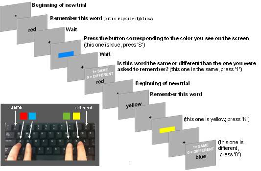

Each trial of the task requires you to make one response.
As shown in the diagram below, before each trial begins you will see an asterisk, then you will see a word written at the center of the screen.
Your job is to report the COLOR of that word as quickly and accurately as possible, using the buttons indicated in the diagram below.
'A' = red 'S' = blue 'J' = green 'K' = yellow
Memory and Color-Naming Task
Each trial of the task has several parts and requires you to make two responses.
As shown in the diagram below, before each trial begins you will see an asterisk, then you will see a word written at the center of the screen.
Your job is to remember that word, because you will be tested on it at the end of trial.
After a few seconds a colored rectangle will appear on the screen.
Your job is to report the color of that rectangle as quickly and accurately as possible, using the buttons indicated in the diagram below.
'A' = red 'S' = blue 'J' = green 'K' = yellow
After another short delay, you will see a word on the screen with instructions to indicate whether it is the same or a different word from the WORD you were asked to remember at the beginning of the trial.
Press the number '1' if it is the same as the word from beginning of the trial. Press '0 (zero)' if it is a different word

Take a short break, then click the button
below to continue onto the next section
*
WORD
+
press 1 if SAME, press 0 if DIFFERENT:
WORD
You're finished - thanks for participating! Submitting to Mechanical Turk...